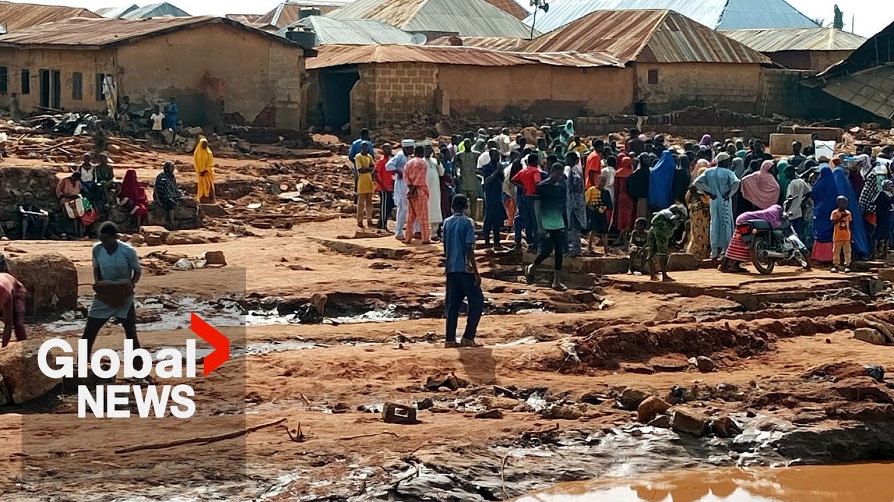

【尼日利亚洪灾：至少151人死亡，尼日尔州3000多所房屋被淹】
Summary: The flooding in Nigeria has caused significant casualties and property damage, with estimates of over 200 deaths and widespread destruction of homes and belongings.
摘要： 尼日利亚洪灾造成重大人员伤亡和财产损失，估计死亡人数超过200人，房屋和财物遭受广泛破坏。

⏱️ Estimated Reading Time: 1 min
📚 高考3500生词：查看词表
[Music] Mommy.
[音乐] 妈妈。
According to our records and the number of bodies so far, we have about 111.
根据我们的记录和目前的遗体数量，我们大约有111具。
But now talking to the head of the district, he's telling me that they they're estimating over 200 bodies.
但现在与区长交谈时，他告诉我他们估计超过200具遗体。
To our own records, we have 111 bodies.
根据我们自己的记录，我们有111具遗体。
There are so many people in their houses sleeping.
有很多人在家里睡觉。
So still in the morning sleeping so many people in fact you cannot count them unless we're able to see the body to counter even myself I lost a brother my hus I have about 11 rooms all were destroyed food everything with although he did not the life escape nothing but my properties all were gone.
事实上，早上还有很多人仍在睡觉，你无法数清他们，除非我们看到遗体。我自己也失去了一个兄弟，我有大约11个房间，全部被毁，食物和一切都没了。尽管他保住了性命，但我的财产全都没了。
What we have suffered here is only God knows the value of even materials.
我们在这里遭受的损失，只有上帝知道其价值。
We have not even talked about human lives.
我们甚至还没有谈及人命。
Like how many lives lost?
比如有多少人丧生？
Nobody can tell you but I think it's in hundreds.
没人能告诉你，但我认为有数百人。
I lost about 20 people.
我失去了大约20个人。